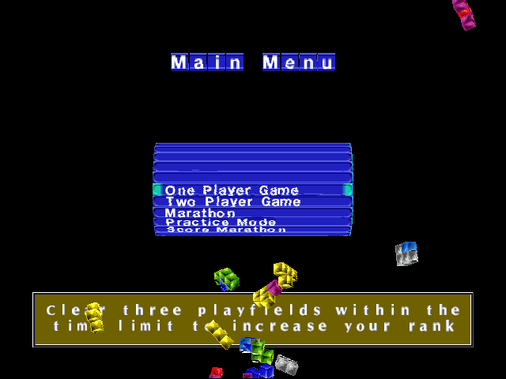
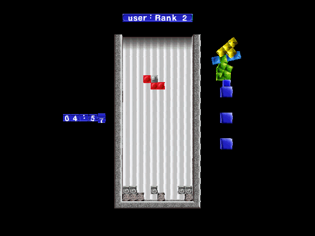

名稱：新俄羅斯方塊／第二代俄羅斯／下一代俄羅斯方塊 (The Next Tetris，英文版)
簡介：Blue Planet Software 1999年出品的俄羅斯方塊遊戲，由Atari代理發行，台灣則由
業訊代理進口，但並未中文化。遊戲分成兩種玩法，一是舊式傳統的玩法，一是新式
玩法，當消去一行時，上面的方格會自動往下填補到空隙裡。新式玩法還分成最短時
間填補、最少數目填補等多種變形，增加遊戲的變化性與娛樂性。不過是否好玩還是
要看個人感覺。


備註：本版為有音軌美版
保護：無（放入光碟才有背景音樂）
備註：業訊代理版為歐版，且光碟並沒有附上音軌，因此玩時會沒有背景音樂。
操作：
功能 左玩家 右玩家
-----------------------------
左移 A 左鍵
右移 D 右鍵
旋轉 W 上鍵
順轉 E Pad-9
逆轉 Q Pad-7
掉下 S Pad-5／下鍵
確認 Space Enter
取消 X .
Esc = 結束／取消
說明：
1.One Player Game：單人遊戲，在時限內消去預留的方塊。
2.Two Player Game：雙人對抗遊戲。
3.Marathon：以最短時間內消去預留的方塊。
4.Pactice Mode：使用最少的方塊消去預留的方塊。
5.Score Marathon：挑戰最高分。
6.Classic Tetris：傳統俄羅斯方塊。